在构建高性能、流畅的 Web 应用时，内存管理至关重要。如果处理不当，内存泄漏会导致应用运行缓慢、卡顿，甚至崩溃，严重影响用户体验。作为前端开发者，我们经常与 JavaScript 打交道，而 JavaScript 的垃圾回收机制虽然强大，但并非万无一失。稍有不慎，就可能埋下内存泄漏的隐患。
什么是内存泄漏？
简单来说，内存泄漏是指程序中已经不再需要的内存，但由于某种原因没有被释放，导致这部分内存无法被再次利用，从而造成内存资源的浪费。在 JavaScript 中，垃圾回收器会自动回收不再使用的内存，但如果我们的代码中存在一些阻止垃圾回收器正常工作的因素，就会导致内存泄漏。分享下几个比较常见的前端内存泄漏场景及其解决方案：
1. 被遗忘的定时器和回调函数：
当我们使用 setInterval 或 setTimeout 设置定时器，或者设置了事件监听器、订阅发布等回调函数后，如果没有及时清除，即使这些定时器或回调函数已经不再需要，它们仍然会驻留在内存中，导致相关变量无法被回收。
坑点示例：
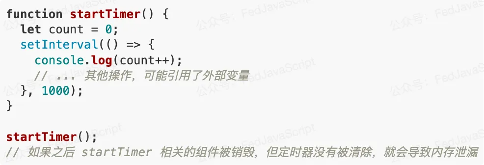解决方案：
- 在组件卸载或不需要定时器时，使用
clearInterval或clearTimeout清除定时器。 - 移除事件监听器使用
removeEventListener。 - 取消订阅发布模式中的订阅。
优化示例：
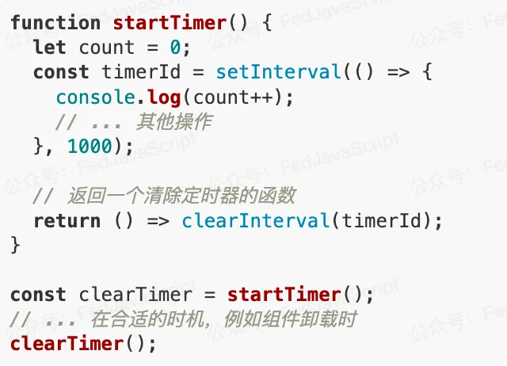2. 脱离 DOM 树的 DOM 元素引用：
当我们使用 JavaScript 变量引用了某个 DOM 元素，即使这个 DOM 元素已经从 DOM 树中移除，由于 JavaScript 变量仍然持有对它的引用，该 DOM 元素及其子元素都无法被垃圾回收。
坑点示例：
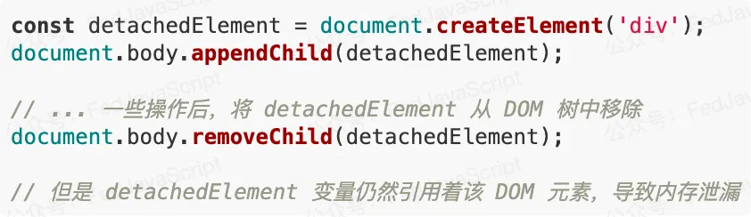解决方案：
- 在 DOM 元素不再需要时，将引用该 DOM 元素的 JavaScript 变量设置为
null。
优化示例：
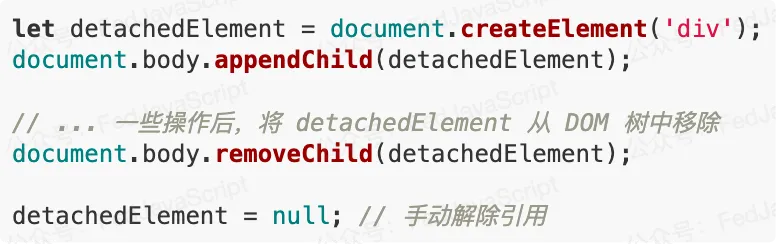3. 闭包使用不当：
闭包是 JavaScript 的强大特性，但如果不注意，也可能导致内存泄漏。如果闭包中引用了外部作用域的变量，即使外部函数已经执行完毕，这些变量也不会被垃圾回收，因为闭包仍然保持着对它们的引用。
坑点示例：
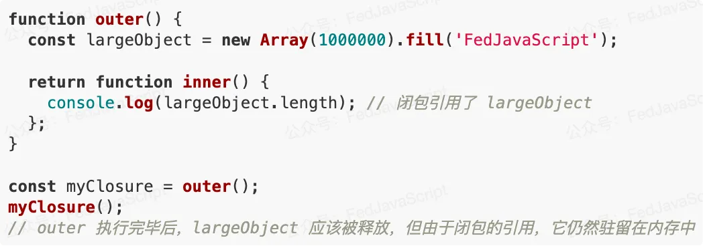解决方案：
- 谨慎使用闭包，避免不必要的变量引用。
- 如果确实需要使用闭包，在闭包不再需要时，手动解除对外部变量的引用，例如将闭包变量设置为
null。
优化示例：
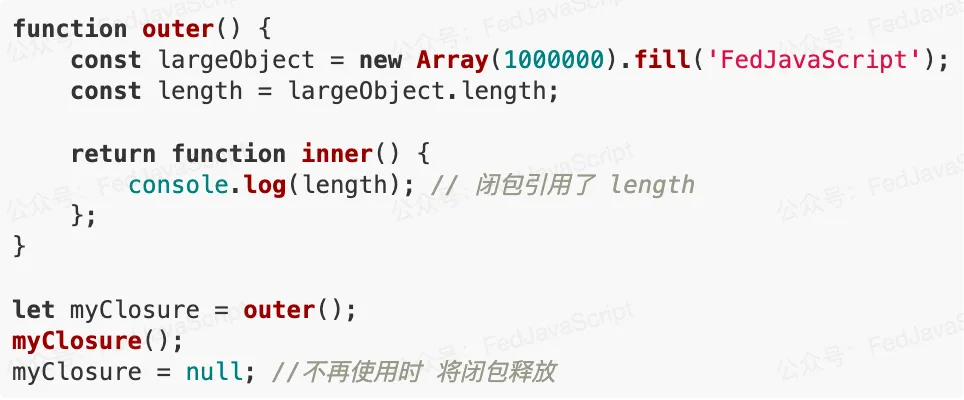4. 全局变量的滥用：
全局变量只有在页面关闭时才会被回收。如果定义了过多的全局变量，或者将一些临时变量错误地挂载到全局对象上，会导致这些变量一直占用内存，直到页面关闭。
坑点示例：
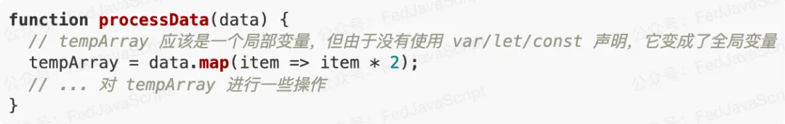解决方案：
- 尽量避免使用全局变量，使用
let或const声明局部变量。 - 使用立即执行函数 (IIFE) 或模块化方式来管理代码，减少全局变量的暴露。
5. 未关闭的 WebSocket 连接：
WebSocket 提供了持久的双向通信通道。如果创建了 WebSocket 连接，但在不再需要时没有正确关闭，该连接会一直占用资源，导致内存泄漏。
坑点示例：
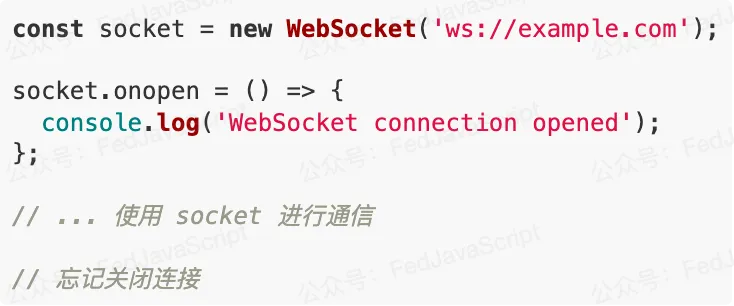解决方案：
- 在不需要 WebSocket 连接时，使用
socket.close()方法关闭连接。 - 可以在组件卸载或页面关闭时，统一关闭 WebSocket 连接。
优化示例：
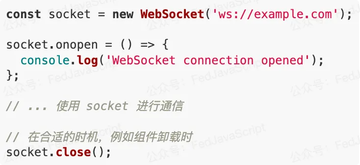6. Map 和 Set 的不当使用：
Map 和 Set 是 ES6 引入的新数据结构。如果使用不当，也可能导致内存泄漏。例如，如果将对象作为 Map 的键或 Set 的成员，并且没有手动删除这些键值对或成员，即使这些对象已经不再需要，它们仍然会被 Map 或 Set 引用，无法被垃圾回收。特别是当键名是复杂对象时，内存占用会非常明显。
坑点示例：
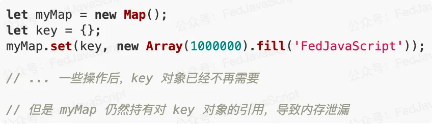解决方案：
- 在
Map或Set中的键或成员不再需要时，使用delete方法删除对应的键值对或成员。 - 可以使用
WeakMap或WeakSet来代替Map或Set。WeakMap和WeakSet对键或成员的引用是弱引用，不会阻止垃圾回收器回收不再需要的对象。
优化示例：
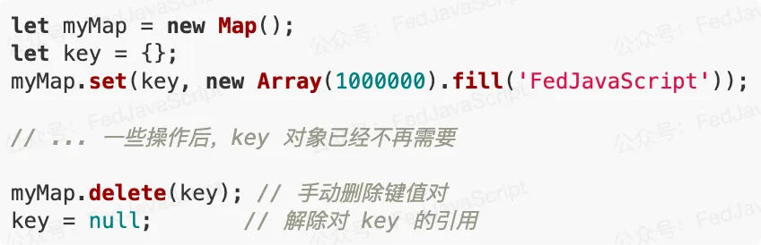7. 控制台输出 (console.log)：
最后，在开发过程中，我们经常使用 console.log 来调试代码。但是，如果在生产环境中忘记删除这些 console.log 语句，并且打印了一些大型对象，可能会导致这些对象一直被控制台引用，无法被垃圾回收，这个我自己都踩过好几次了…，一定要注意。
解决方案：
- 使用构建工具或代码检查工具，在代码发布到生产环境之前，自动删除
console.log语句。 - 也可以重写
console.log方法，在生产环境中不执行任何操作。